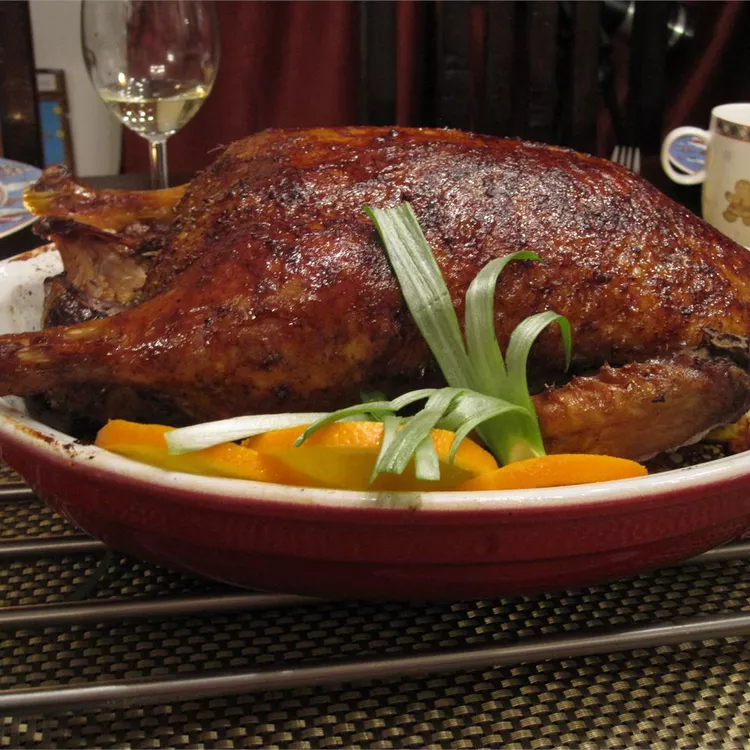

Description
Peking duck is a famous Chinese dish that dates back at least 400 years. The duck is characterized by its crispy skin and tender meat. It is traditionally made with a specific kind of duck and takes days to prepare, but this version comes together in just under four hours.
Ingredients
- 1 (4 pound) whole duck, dressed
- ½ teaspoon ground cinnamon
- ½ teaspoon ground ginger
- ¼ teaspoon ground nutmeg
- ¼ teaspoon ground white pepper
Steps
- Rinse duck inside and out; pat dry. Cut off tail and discard.
- Mix cinnamon, ginger, nutmeg, white pepper, and cloves together in a small bowl. Sprinkle 1 teaspoon of spice mix into cavity of duck. Stir 1 tablespoon soy sauce into remaining spice mix and rub evenly over entire outside of duck. Cut 1 green onion in half and tuck it inside cavity. Cover and refrigerate duck for at least 2 hours or up to overnight.
- Preheat the oven to 375 degrees F (190 degrees C).
- Roast duck in the preheated oven for 30 minutes.
- Mix plum jam, chutney, sugar, and vinegar in a small serving bowl. Chop remaining green onions and place them into a separate bowl.
- Place whole duck onto a serving platter and garnish with orange slices and fresh parsley. Serve with plum sauce and chopped green onions.
Return to Top
Return to Homepage